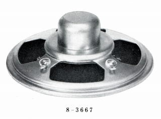
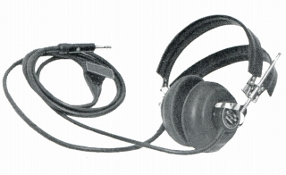
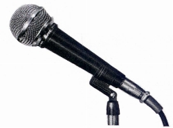
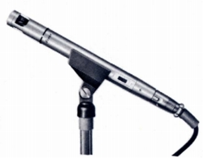
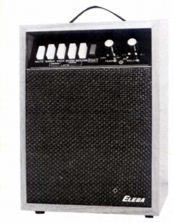
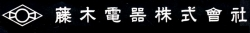
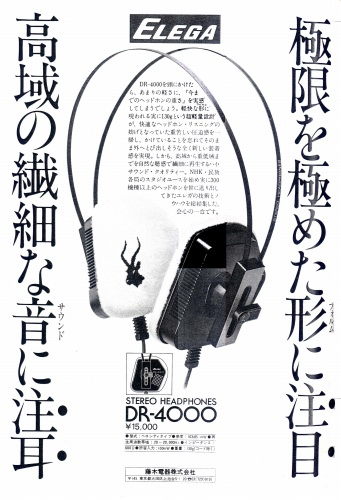
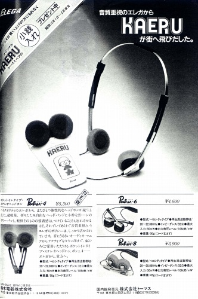

ELEGA カタログギャラリー
�@1960年代前半の英文カタログ
まだ小型スピーカーがメインだったころの英文カタログ

（英文カタログで詳細はわからないが、主力はHi-Fi用ではなく、ラジオなどに内蔵する小型スピーカーだったようだ）

（1960年代初頭で、カタログ上には、まだ電磁型ヘッドフォンが残っていた。電磁型は今日のダイナミック型のような永久磁石を用いるのではなく、電磁石を用いるタイプである。技術が発達する以前はダイナミック型より大きな音が出せ、かつ低音が出るので主流でしたが、日本では1950年代にダイナミック型に移行していった。当サイト収録のメーカーではサワフジやアシダヴォックスは電磁型時代からのメーカーです。）
�A1973年9月版DR-182C単品カタログ
テクニカのATH-Uシリーズの祖先とも言えるDR-182Cのカタログ
�B1974年10月版ヘッドフォン総合カタログ
現代的なヘッドフォンの先駆DR-196Cを表紙とするカタログ
�C1970年代後半の総合カタログ
ヘッドフォンの他にはマイクとリズムマシーンしか載っていないカタログ



（左からダイナミックマイク DM-410C エレクトレットコンデンサーマイク EM-120A リズムマシーン RY-100)
なおエレガの母体企業名を「藤木電気」する場合が多く、管理人自体も間違えたが、正しくは「藤木電器」である。

なお、頻度は少ないが広告も掲載していた。

（コピーのセンスは旧スタックスを思わせる。）

（末期の広告。キャンペーン攻勢がやはり崩壊直前の旧スタックスを思わせる。）